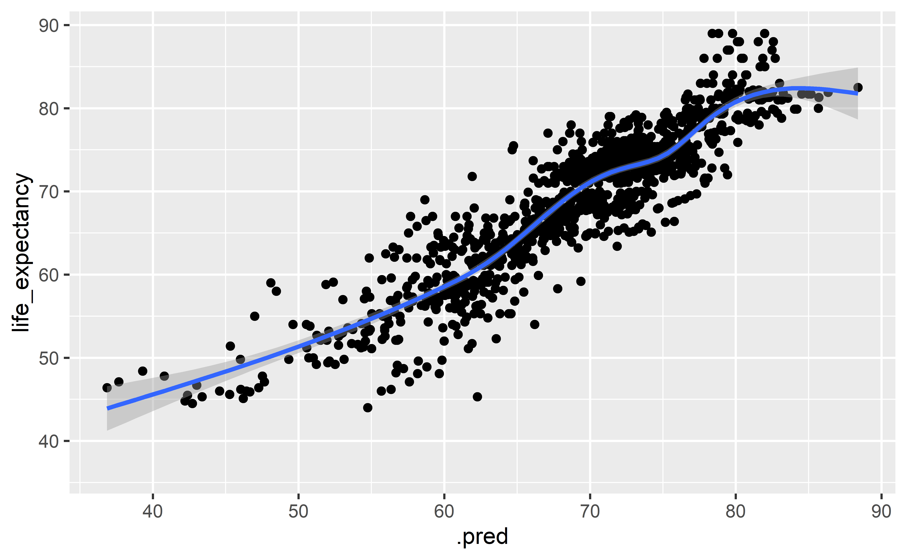

An investigation of the standard of living between developed and developing countries.
By analysing the role of life expectancy and other factors affecting quality of life.
Group172
Ursula Doyle, Chris Shen, George Boutselis, Osian ap Sion.
2021-12-02
Life expectancy vs. GDP per capita

Modelling relationship between GDP and life expectancy
## [1] 0.2149924Residual Plot
Relashionship Between Diseases and Schooling
This part of the presentation focuses on:
The relationship between the average years spent in school and Deaths from HIV/AIDS in different countries
The relationship between vaccinations and years spent in school
HIV/AIDS vs Schooling
Map Showing Schooling Years
Vaccinations vs Schooling
## `geom_smooth()` using formula 'y ~ x'Summary Statistics
## # A tibble: 2 x 3
## Developed_Countries HIV_AIDS measles
## <chr> <dbl> <dbl>
## 1 %Greater than mean 0 3.96
## 2 %less than mean 100 96.0100% of developed countries had less than the mean deaths of HIV/AIDS worldwide.
96% of developed countries had less than the mean deaths of measles worldwide.
GDP, immunisation & under-five deaths
This part of the presentation focuses on studying two main topics:
Effect of GDP on immunisation rate
Effect of immunisation against diseases on under-five deaths
After wrangling, data is explored through visualisations from which conclusions are drawn.
Variables
Predictor variables
Average immunisation against disease (% population)
GDP (USD)
Status of country (Developing & Developed)
Outcome variables
- under-five deaths (per 1000 of population)
Effect of GDP on average immunisation
- Do developed countries have higher immunisation rates?
## # A tibble: 2 x 3
## status `mean(gdp)` `mean(average_immunity)`
## <chr> <dbl> <dbl>
## 1 Developed 19383. 91.7
## 2 Developing 4531. 82.0Do developed countries have higher immunisation rates?
Yes, and the summary statistics support this.
Average immunity of developed countries are about 10 % higher.
Effect of average immunisation on under-five deaths
- Does higher average immunisation rates result in lower under-five deaths?
It is hard to draw conclusions from this visualisation, perhaps a faceted plot by year will help.
- Does higher average immunisation rates result in lower under-five deaths?
Yes, it is clear from the visualisation.
Much of the data points reside at the right,
geom_jitter()shows this very well.Due to time constraints modeling part is removed.
Modelling life expectancy using testing and training data
## [1] 2054 22## [1] 685 22## # A tibble: 19 x 5
## term estimate std.error statistic p.value
## <chr> <dbl> <dbl> <dbl> <dbl>
## 1 (Intercept) 5.37e+1 0.987 54.4 1.13e-321
## 2 statusDeveloping -7.19e-1 0.404 -1.78 7.52e- 2
## 3 adult_mortality -1.65e-2 0.00113 -14.6 2.64e- 44
## 4 infant_deaths 9.80e-2 0.0131 7.48 1.45e- 13
## 5 alcohol -6.98e-2 0.0392 -1.78 7.47e- 2
## 6 percentage_expenditure 5.76e-4 0.000221 2.61 9.18e- 3
## 7 hepatitis_b -8.77e-3 0.00542 -1.62 1.06e- 1
## 8 measles -1.04e-5 0.0000136 -0.769 4.42e- 1
## 9 bmi 3.11e-2 0.00704 4.42 1.07e- 5
## 10 under_five_deaths -7.31e-2 0.00943 -7.75 1.98e- 14
## 11 polio 8.79e-3 0.00619 1.42 1.56e- 1
## 12 diphtheria 1.80e-2 0.00724 2.48 1.32e- 2
## 13 hiv_aids -4.29e-1 0.0214 -20.0 6.49e- 77
## 14 gdp -2.73e-5 0.0000355 -0.768 4.43e- 1
## 15 population -1.81e-9 0.00000000206 -0.878 3.80e- 1
## 16 thinness_1_19_years -9.10e-3 0.0641 -0.142 8.87e- 1
## 17 thinness_5_9_years -5.33e-2 0.0634 -0.840 4.01e- 1
## 18 income_composition_of_resources 1.14e+1 1.03 11.1 4.18e- 27
## 19 schooling 8.51e-1 0.0715 11.9 6.13e- 31Training Data
## `geom_smooth()` using method = 'gam' and formula 'y ~ s(x, bs = "cs")'
Testing Data
## `geom_smooth()` using method = 'loess' and formula 'y ~ x'Conclusion
- Overall, there is a strong correlation between life expectancy and standard of living. As demonstrated through modelling, individual variables are not sufficient in predicting life expectancy. But by using the whole model, we managed to form a more reliable model to predict life expectancy.